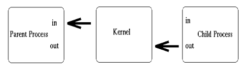

For you as a programmer, it is important to know if the current Linux system has a sound card plugged in. One way to check is to examine /dev/sndstat. If opening /dev/sndstat fails and errno=ENODEV then no sound driver is activated which means you will get no help from the kernel sound driver. The same result might be achieved by trying to open /dev/dsp as long as it is not a link to the pcsnd driver in which case open() will not fail.
If you want to mess with a sound card at the hardware level you know that some combination of outb() and inb() calls will detect the sound card you are looking for.
By using the sound driver for your programs, chances are that they will work on other i386 systems as well, since some clever people decided to use the same driver for Linux, isc, FreeBSD and most other i386 based systems. It will aid in porting programs if Linux on other architectures offers the same sound device interface. A sound card is not part of the Linux console, but is a special device. A sound card mostly offers three main features:
Each of these features have their own device driver interface. For digital samples it is /dev/dsp, for the frequency modulation it is /dev/sequencer and for the midi interface it is /dev/midi. The sound settings (like volume, balance or bass) can be controlled via the /dev/mixer interface. For compatibility reasons a /dev/audio device exists which can read SUN  -law sound data, but it maps to the digital sample device.
You are right if you guessed that you use ioctl() to manipulate these devices. The ioctl() requests are defined in <linux/soundcard.h> and begin with SNDCTL_.
Since I don't own a soundcard someone else has to continue here